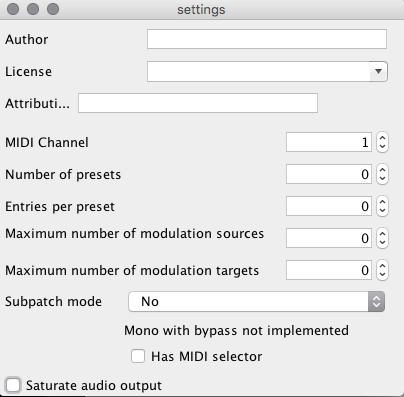

3 seconds sounds just fine, even for granular treatment, and monotimbrality is also not a problem as far as I am concerned. So let me not keep you from your good work any longer. 
8 voices Sample Player
brasso
#10
krikor
#11
no harm done, I don't know much about the axoloty platform but I used to do a bit of max msp and reaktor, so I guess for a few things I'm almost ok!
brasso
#13
Timbrality and polyphony are not the same thing. A polyphonic instrument is still monotimbral if it can only play one sound / preset / program / sample at a time. So you yourself where actually already suggesting an 8-voice monotimbral instrument! 
krikor
#15
Hello,
I think I don't understand how the table Alloc works, I'm getting this with the patch here.
best
K
Generate code complete
Creating directory on sdcard : /SamplePlayer
Done creating directory
Changing working directory on sdcard : /SamplePlayer
Done changing working directory
Start compiling patch
Compiling patch... with /Applications/Axoloti.app/Contents/Java/firmware
BDIR = /Users/krikor/Documents/axoloti/build
FIRMWARE = .
RM
APP
! /Users/krikor/Documents/axoloti/build/xpatch.h.gch
. /Applications/Axoloti.app/Contents/Java/firmware/../chibios/ext/fatfs/src/ff.h
. /Users/krikor/Documents/axoloti/axoloti-factory/objects/fx/rngs/rings_fx.h
/Users/krikor/Documents/axoloti/build/xpatch.cpp: In member function 'void rootc::instancesampler_space_voice1::instancesamplePlayer__1::dsp(bool, int32_t, int32_t, int32_t, int32_t, int32_t, int32_t, int32_t, int32_t, int32_t, bool, int32_t, int32_t, int32_t, int32_t, int32_t, int32_t, const int32_t*, int32_t (&)[16], int32_t&, int32_t&, int, int)':
/Users/krikor/Documents/axoloti/build/xpatch.cpp:440:24: error: 'class rootc' has no member named 'instancesampletable_i'
out= (parent->parent->instancesampletable_i.array[((((int32_t)(count*ratio))&(samplelength-1))+Phase+(sample<parent->instancesampletable_i.LENGTHMASK]<parent->instancesampletable_i.GAIN)>>5;
^
/Users/krikor/Documents/axoloti/build/xpatch.cpp:440:143: error: 'class rootc' has no member named 'instancesampletable_i'
out= (parent->parent->instancesampletable_i.array[((((int32_t)(count*ratio))&(samplelength-1))+Phase+(sample<parent->instancesampletable_i.LENGTHMASK]<parent->instancesampletable_i.GAIN)>>5;
^
/Users/krikor/Documents/axoloti/build/xpatch.cpp:440:194: error: 'class rootc' has no member named 'instancesampletable_i'
out= (parent->parent->instancesampletable_i.array[((((int32_t)(count*ratio))&(samplelength-1))+Phase+(sample<parent->instancesampletable_i.LENGTHMASK]<parent->instancesampletable_i.GAIN)>>5;
^
/Users/krikor/Documents/axoloti/build/xpatch.cpp:454:24: error: 'class rootc' has no member named 'instancesampletable_i'
out=(parent->parent->instancesampletable_i.array[((((int32_t)(count*ratio))&(samplelength-1))+Phase+(sample<parent->instancesampletable_i.LENGTHMASK]<parent->instancesampletable_i.GAIN)>>5;
^
/Users/krikor/Documents/axoloti/build/xpatch.cpp:454:143: error: 'class rootc' has no member named 'instancesampletable_i'
out=(parent->parent->instancesampletable_i.array[((((int32_t)(count*ratio))&(samplelength-1))+Phase+(sample<parent->instancesampletable_i.LENGTHMASK]<parent->instancesampletable_i.GAIN)>>5;
^
/Users/krikor/Documents/axoloti/build/xpatch.cpp:454:194: error: 'class rootc' has no member named 'instancesampletable_i'
out=(parent->parent->instancesampletable_i.array[((((int32_t)(count*ratio))&(samplelength-1))+Phase+(sample<parent->instancesampletable_i.LENGTHMASK]<parent->instancesampletable_i.GAIN)>>5;
^
/Users/krikor/Documents/axoloti/build/xpatch.cpp: In member function 'void rootc::instancesampler_space_voice5::instancesamplePlayer__1::dsp(bool, int32_t, int32_t, int32_t, int32_t, int32_t, int32_t, int32_t, int32_t, int32_t, bool, int32_t, int32_t, int32_t, int32_t, int32_t, int32_t, const int32_t*, int32_t (&)[16], int32_t&, int32_t&, int, int)':
/Users/krikor/Documents/axoloti/build/xpatch.cpp:1716:24: error: 'class rootc' has no member named 'instancesampletable_i'
out= (parent->parent->instancesampletable_i.array[((((int32_t)(count*ratio))&(samplelength-1))+Phase+(sample<parent->instancesampletable_i.LENGTHMASK]<parent->instancesampletable_i.GAIN)>>5;
^
/Users/krikor/Documents/axoloti/build/xpatch.cpp:1716:143: error: 'class rootc' has no member named 'instancesampletable_i'
out= (parent->parent->instancesampletable_i.array[((((int32_t)(count*ratio))&(samplelength-1))+Phase+(sample<parent->instancesampletable_i.LENGTHMASK]<parent->instancesampletable_i.GAIN)>>5;
^
/Users/krikor/Documents/axoloti/build/xpatch.cpp:1716:194: error: 'class rootc' has no member named 'instancesampletable_i'
out= (parent->parent->instancesampletable_i.array[((((int32_t)(count*ratio))&(samplelength-1))+Phase+(sample<parent->instancesampletable_i.LENGTHMASK]<parent->instancesampletable_i.GAIN)>>5;
^
/Users/krikor/Documents/axoloti/build/xpatch.cpp:1730:24: error: 'class rootc' has no member named 'instancesampletable_i'
out=(parent->parent->instancesampletable_i.array[((((int32_t)(count*ratio))&(samplelength-1))+Phase+(sample<parent->instancesampletable_i.LENGTHMASK]<parent->instancesampletable_i.GAIN)>>5;
^
/Users/krikor/Documents/axoloti/build/xpatch.cpp:1730:143: error: 'class rootc' has no member named 'instancesampletable_i'
out=(parent->parent->instancesampletable_i.array[((((int32_t)(count*ratio))&(samplelength-1))+Phase+(sample<parent->instancesampletable_i.LENGTHMASK]<parent->instancesampletable_i.GAIN)>>5;
^
/Users/krikor/Documents/axoloti/build/xpatch.cpp:1730:194: error: 'class rootc' has no member named 'instancesampletable_i'
out=(parent->parent->instancesampletable_i.array[((((int32_t)(count*ratio))&(samplelength-1))+Phase+(sample<parent->instancesampletable_i.LENGTHMASK]<parent->instancesampletable_i.GAIN)>>5;
^
/Users/krikor/Documents/axoloti/build/xpatch.cpp: In member function 'void rootc::instancetableload__1::dsp(const char*, bool, int32_t, int32_t&, int)':
/Users/krikor/Documents/axoloti/build/xpatch.cpp:2623:34: error: 'class rootc' has no member named 'instancesampletable_i'
int rem_sz = sizeof(parent->instancesampletable_i.array)samplelength;
^
/Users/krikor/Documents/axoloti/build/xpatch.cpp:2629:34: error: 'class rootc' has no member named 'instancesampletable_i'
memcpy((char )(&parent->instancesampletable_i.array[inlet_samplesamplelength]) + offset,(char *)fbuff,bytes_read);
^
/Users/krikor/Documents/axoloti/build/xpatch.cpp:2634:34: error: 'class rootc' has no member named 'instancesampletable_i'
memcpy((char )(&parent->instancesampletable_i.array[inlet_samplesamplelength]) + offset,(char *)fbuff,bytes_read);
^
/Users/krikor/Documents/axoloti/build/xpatch.cpp: In member function 'void rootc::instancesampler_space_voice2::instancesamplePlayer__1::dsp(bool, int32_t, int32_t, int32_t, int32_t, int32_t, int32_t, int32_t, int32_t, int32_t, bool, int32_t, int32_t, int32_t, int32_t, int32_t, int32_t, const int32_t*, int32_t (&)[16], int32_t&, int32_t&, int, int)':
/Users/krikor/Documents/axoloti/build/xpatch.cpp:3058:24: error: 'class rootc' has no member named 'instancesampletable_i'
out= (parent->parent->instancesampletable_i.array[((((int32_t)(count*ratio))&(samplelength-1))+Phase+(sample<parent->instancesampletable_i.LENGTHMASK]<parent->instancesampletable_i.GAIN)>>5;
^
/Users/krikor/Documents/axoloti/build/xpatch.cpp:3058:143: error: 'class rootc' has no member named 'instancesampletable_i'
out= (parent->parent->instancesampletable_i.array[((((int32_t)(count*ratio))&(samplelength-1))+Phase+(sample<parent->instancesampletable_i.LENGTHMASK]<parent->instancesampletable_i.GAIN)>>5;
^
/Users/krikor/Documents/axoloti/build/xpatch.cpp:3058:194: error: 'class rootc' has no member named 'instancesampletable_i'
out= (parent->parent->instancesampletable_i.array[((((int32_t)(count*ratio))&(samplelength-1))+Phase+(sample<parent->instancesampletable_i.LENGTHMASK]<parent->instancesampletable_i.GAIN)>>5;
^
/Users/krikor/Documents/axoloti/build/xpatch.cpp:3072:24: error: 'class rootc' has no member named 'instancesampletable_i'
out=(parent->parent->instancesampletable_i.array[((((int32_t)(count*ratio))&(samplelength-1))+Phase+(sample<parent->instancesampletable_i.LENGTHMASK]<parent->instancesampletable_i.GAIN)>>5;
^
/Users/krikor/Documents/axoloti/build/xpatch.cpp:3072:143: error: 'class rootc' has no member named 'instancesampletable_i'
out=(parent->parent->instancesampletable_i.array[((((int32_t)(count*ratio))&(samplelength-1))+Phase+(sample<parent->instancesampletable_i.LENGTHMASK]<parent->instancesampletable_i.GAIN)>>5;
^
/Users/krikor/Documents/axoloti/build/xpatch.cpp:3072:194: error: 'class rootc' has no member named 'instancesampletable_i'
out=(parent->parent->instancesampletable_i.array[((((int32_t)(count*ratio))&(samplelength-1))+Phase+(sample<parent->instancesampletable_i.LENGTHMASK]<parent->instancesampletable_i.GAIN)>>5;
^
/Users/krikor/Documents/axoloti/build/xpatch.cpp: In member function 'void rootc::instancesampler_space_voice6::instancesamplePlayer__1::dsp(bool, int32_t, int32_t, int32_t, int32_t, int32_t, int32_t, int32_t, int32_t, int32_t, bool, int32_t, int32_t, int32_t, int32_t, int32_t, int32_t, const int32_t*, int32_t (&)[16], int32_t&, int32_t&, int, int)':
/Users/krikor/Documents/axoloti/build/xpatch.cpp:4298:24: error: 'class rootc' has no member named 'instancesampletable_i'
out= (parent->parent->instancesampletable_i.array[((((int32_t)(count*ratio))&(samplelength-1))+Phase+(sample<parent->instancesampletable_i.LENGTHMASK]<parent->instancesampletable_i.GAIN)>>5;
^
/Users/krikor/Documents/axoloti/build/xpatch.cpp:4298:143: error: 'class rootc' has no member named 'instancesampletable_i'
out= (parent->parent->instancesampletable_i.array[((((int32_t)(count*ratio))&(samplelength-1))+Phase+(sample<parent->instancesampletable_i.LENGTHMASK]<parent->instancesampletable_i.GAIN)>>5;
^
/Users/krikor/Documents/axoloti/build/xpatch.cpp:4298:194: error: 'class rootc' has no member named 'instancesampletable_i'
out= (parent->parent->instancesampletable_i.array[((((int32_t)(count*ratio))&(samplelength-1))+Phase+(sample<parent->instancesampletable_i.LENGTHMASK]<parent->instancesampletable_i.GAIN)>>5;
^
/Users/krikor/Documents/axoloti/build/xpatch.cpp:4312:24: error: 'class rootc' has no member named 'instancesampletable_i'
out=(parent->parent->instancesampletable_i.array[((((int32_t)(count*ratio))&(samplelength-1))+Phase+(sample<parent->instancesampletable_i.LENGTHMASK]<parent->instancesampletable_i.GAIN)>>5;
^
/Users/krikor/Documents/axoloti/build/xpatch.cpp:4312:143: error: 'class rootc' has no member named 'instancesampletable_i'
out=(parent->parent->instancesampletable_i.array[((((int32_t)(count*ratio))&(samplelength-1))+Phase+(sample<parent->instancesampletable_i.LENGTHMASK]<parent->instancesampletable_i.GAIN)>>5;
^
/Users/krikor/Documents/axoloti/build/xpatch.cpp:4312:194: error: 'class rootc' has no member named 'instancesampletable_i'
out=(parent->parent->instancesampletable_i.array[((((int32_t)(count*ratio))&(samplelength-1))+Phase+(sample<parent->instancesampletable_i.LENGTHMASK]<parent->instancesampletable_i.GAIN)>>5;
^
/Users/krikor/Documents/axoloti/build/xpatch.cpp: In member function 'void rootc::instancesampler_space_voice3::instancesamplePlayer__1::dsp(bool, int32_t, int32_t, int32_t, int32_t, int32_t, int32_t, int32_t, int32_t, int32_t, bool, int32_t, int32_t, int32_t, int32_t, int32_t, int32_t, const int32_t*, int32_t (&)[16], int32_t&, int32_t&, int, int)':
/Users/krikor/Documents/axoloti/build/xpatch.cpp:6664:24: error: 'class rootc' has no member named 'instancesampletable_i'
out= (parent->parent->instancesampletable_i.array[((((int32_t)(count*ratio))&(samplelength-1))+Phase+(sample<parent->instancesampletable_i.LENGTHMASK]<parent->instancesampletable_i.GAIN)>>5;
^
/Users/krikor/Documents/axoloti/build/xpatch.cpp:6664:143: error: 'class rootc' has no member named 'instancesampletable_i'
out= (parent->parent->instancesampletable_i.array[((((int32_t)(count*ratio))&(samplelength-1))+Phase+(sample<parent->instancesampletable_i.LENGTHMASK]<parent->instancesampletable_i.GAIN)>>5;
^
/Users/krikor/Documents/axoloti/build/xpatch.cpp:6664:194: error: 'class rootc' has no member named 'instancesampletable_i'
out= (parent->parent->instancesampletable_i.array[((((int32_t)(count*ratio))&(samplelength-1))+Phase+(sample<parent->instancesampletable_i.LENGTHMASK]<parent->instancesampletable_i.GAIN)>>5;
^
/Users/krikor/Documents/axoloti/build/xpatch.cpp:6678:24: error: 'class rootc' has no member named 'instancesampletable_i'
out=(parent->parent->instancesampletable_i.array[((((int32_t)(count*ratio))&(samplelength-1))+Phase+(sample<parent->instancesampletable_i.LENGTHMASK]<parent->instancesampletable_i.GAIN)>>5;
^
/Users/krikor/Documents/axoloti/build/xpatch.cpp:6678:143: error: 'class rootc' has no member named 'instancesampletable_i'
out=(parent->parent->instancesampletable_i.array[((((int32_t)(count*ratio))&(samplelength-1))+Phase+(sample<parent->instancesampletable_i.LENGTHMASK]<parent->instancesampletable_i.GAIN)>>5;
^
/Users/krikor/Documents/axoloti/build/xpatch.cpp:6678:194: error: 'class rootc' has no member named 'instancesampletable_i'
out=(parent->parent->instancesampletable_i.array[((((int32_t)(count*ratio))&(samplelength-1))+Phase+(sample<parent->instancesampletable_i.LENGTHMASK]<parent->instancesampletable_i.GAIN)>>5;
^
/Users/krikor/Documents/axoloti/build/xpatch.cpp: In member function 'void rootc::instancesampler_space_voice7::instancesamplePlayer__1::dsp(bool, int32_t, int32_t, int32_t, int32_t, int32_t, int32_t, int32_t, int32_t, int32_t, bool, int32_t, int32_t, int32_t, int32_t, int32_t, int32_t, const int32_t*, int32_t (&)[16], int32_t&, int32_t&, int, int)':
/Users/krikor/Documents/axoloti/build/xpatch.cpp:7844:24: error: 'class rootc' has no member named 'instancesampletable_i'
out= (parent->parent->instancesampletable_i.array[((((int32_t)(count*ratio))&(samplelength-1))+Phase+(sample<parent->instancesampletable_i.LENGTHMASK]<parent->instancesampletable_i.GAIN)>>5;
^
/Users/krikor/Documents/axoloti/build/xpatch.cpp:7844:143: error: 'class rootc' has no member named 'instancesampletable_i'
out= (parent->parent->instancesampletable_i.array[((((int32_t)(count*ratio))&(samplelength-1))+Phase+(sample<parent->instancesampletable_i.LENGTHMASK]<parent->instancesampletable_i.GAIN)>>5;
^
/Users/krikor/Documents/axoloti/build/xpatch.cpp:7844:194: error: 'class rootc' has no member named 'instancesampletable_i'
out= (parent->parent->instancesampletable_i.array[((((int32_t)(count*ratio))&(samplelength-1))+Phase+(sample<parent->instancesampletable_i.LENGTHMASK]<parent->instancesampletable_i.GAIN)>>5;
^
/Users/krikor/Documents/axoloti/build/xpatch.cpp:7858:24: error: 'class rootc' has no member named 'instancesampletable_i'
out=(parent->parent->instancesampletable_i.array[((((int32_t)(count*ratio))&(samplelength-1))+Phase+(sample<parent->instancesampletable_i.LENGTHMASK]<parent->instancesampletable_i.GAIN)>>5;
^
/Users/krikor/Documents/axoloti/build/xpatch.cpp:7858:143: error: 'class rootc' has no member named 'instancesampletable_i'
out=(parent->parent->instancesampletable_i.array[((((int32_t)(count*ratio))&(samplelength-1))+Phase+(sample<parent->instancesampletable_i.LENGTHMASK]<parent->instancesampletable_i.GAIN)>>5;
^
/Users/krikor/Documents/axoloti/build/xpatch.cpp:7858:194: error: 'class rootc' has no member named 'instancesampletable_i'
out=(parent->parent->instancesampletable_i.array[((((int32_t)(count*ratio))&(samplelength-1))+Phase+(sample<parent->instancesampletable_i.LENGTHMASK]<parent->instancesampletable_i.GAIN)>>5;
^
/Users/krikor/Documents/axoloti/build/xpatch.cpp: In member function 'void rootc::instancesampler_space_voice4::instancesamplePlayer__1::dsp(bool, int32_t, int32_t, int32_t, int32_t, int32_t, int32_t, int32_t, int32_t, int32_t, bool, int32_t, int32_t, int32_t, int32_t, int32_t, int32_t, const int32_t*, int32_t (&)[16], int32_t&, int32_t&, int, int)':
/Users/krikor/Documents/axoloti/build/xpatch.cpp:11681:24: error: 'class rootc' has no member named 'instancesampletable_i'
out= (parent->parent->instancesampletable_i.array[((((int32_t)(count*ratio))&(samplelength-1))+Phase+(sample<parent->instancesampletable_i.LENGTHMASK]<parent->instancesampletable_i.GAIN)>>5;
^
/Users/krikor/Documents/axoloti/build/xpatch.cpp:11681:143: error: 'class rootc' has no member named 'instancesampletable_i'
out= (parent->parent->instancesampletable_i.array[((((int32_t)(count*ratio))&(samplelength-1))+Phase+(sample<parent->instancesampletable_i.LENGTHMASK]<parent->instancesampletable_i.GAIN)>>5;
^
/Users/krikor/Documents/axoloti/build/xpatch.cpp:11681:194: error: 'class rootc' has no member named 'instancesampletable_i'
out= (parent->parent->instancesampletable_i.array[((((int32_t)(count*ratio))&(samplelength-1))+Phase+(sample<parent->instancesampletable_i.LENGTHMASK]<parent->instancesampletable_i.GAIN)>>5;
^
/Users/krikor/Documents/axoloti/build/xpatch.cpp:11695:24: error: 'class rootc' has no member named 'instancesampletable_i'
out=(parent->parent->instancesampletable_i.array[((((int32_t)(count*ratio))&(samplelength-1))+Phase+(sample<parent->instancesampletable_i.LENGTHMASK]<parent->instancesampletable_i.GAIN)>>5;
^
/Users/krikor/Documents/axoloti/build/xpatch.cpp:11695:143: error: 'class rootc' has no member named 'instancesampletable_i'
out=(parent->parent->instancesampletable_i.array[((((int32_t)(count*ratio))&(samplelength-1))+Phase+(sample<parent->instancesampletable_i.LENGTHMASK]<parent->instancesampletable_i.GAIN)>>5;
^
/Users/krikor/Documents/axoloti/build/xpatch.cpp:11695:194: error: 'class rootc' has no member named 'instancesampletable_i'
out=(parent->parent->instancesampletable_i.array[((((int32_t)(count*ratio))&(samplelength-1))+Phase+(sample<parent->instancesampletable_i.LENGTHMASK]<parent->instancesampletable_i.GAIN)>>5;
^
/Users/krikor/Documents/axoloti/build/xpatch.cpp: In member function 'void rootc::instancesampler_space_voice8::instancesamplePlayer__1::dsp(bool, int32_t, int32_t, int32_t, int32_t, int32_t, int32_t, int32_t, int32_t, int32_t, bool, int32_t, int32_t, int32_t, int32_t, int32_t, int32_t, const int32_t*, int32_t (&)[16], int32_t&, int32_t&, int, int)':
/Users/krikor/Documents/axoloti/build/xpatch.cpp:12850:24: error: 'class rootc' has no member named 'instancesampletable_i'
out= (parent->parent->instancesampletable_i.array[((((int32_t)(count*ratio))&(samplelength-1))+Phase+(sample<parent->instancesampletable_i.LENGTHMASK]<parent->instancesampletable_i.GAIN)>>5;
^
/Users/krikor/Documents/axoloti/build/xpatch.cpp:12850:143: error: 'class rootc' has no member named 'instancesampletable_i'
out= (parent->parent->instancesampletable_i.array[((((int32_t)(count*ratio))&(samplelength-1))+Phase+(sample<parent->instancesampletable_i.LENGTHMASK]<parent->instancesampletable_i.GAIN)>>5;
^
/Users/krikor/Documents/axoloti/build/xpatch.cpp:12850:194: error: 'class rootc' has no member named 'instancesampletable_i'
out= (parent->parent->instancesampletable_i.array[((((int32_t)(count*ratio))&(samplelength-1))+Phase+(sample<parent->instancesampletable_i.LENGTHMASK]<parent->instancesampletable_i.GAIN)>>5;
^
/Users/krikor/Documents/axoloti/build/xpatch.cpp:12864:24: error: 'class rootc' has no member named 'instancesampletable_i'
out=(parent->parent->instancesampletable_i.array[((((int32_t)(count*ratio))&(samplelength-1))+Phase+(sample<parent->instancesampletable_i.LENGTHMASK]<parent->instancesampletable_i.GAIN)>>5;
^
/Users/krikor/Documents/axoloti/build/xpatch.cpp:12864:143: error: 'class rootc' has no member named 'instancesampletable_i'
out=(parent->parent->instancesampletable_i.array[((((int32_t)(count*ratio))&(samplelength-1))+Phase+(sample<parent->instancesampletable_i.LENGTHMASK]<parent->instancesampletable_i.GAIN)>>5;
^
/Users/krikor/Documents/axoloti/build/xpatch.cpp:12864:194: error: 'class rootc' has no member named 'instancesampletable_i'
out=(parent->parent->instancesampletable_i.array[((((int32_t)(count*ratio))&(samplelength-1))+Phase+(sample<parent->instancesampletable_i.LENGTHMASK]<parent->instancesampletable_i.GAIN)>>5;
^
Multiple include guards may be useful for:
/Users/krikor/Documents/axoloti/axoloti-factory/objects/fx/rngs/rings_fx.h
make: *** [/Users/krikor/Documents/axoloti/build/xpatch.bin] Error 1
shell task failed, exit value: 2
Compiling patch failed ( /Users/krikor/Documents/axoloti/patches/Krikor/SamplePlayer.axp )
Sampler with Arpeggiator
jaffasplaffa
#16
There are a couple of things that jumps in my eye:
First is the string/c object:
You need to write in where the "XTALBACH.raw" file is located. If it is located in the root of the sd-card you should write:
/XTALBACH.raw
If the file is in a folder called "audio" you should write:
/audio/XTALBACH.raw
Get it?
Next thing is the table, this is what gives you the error:
You need to write the name of the table/alloc 16b sdram into tablebox on the sss/table/tableload also inside all the sample voices.
So it would look like this:
And you should use MAXIMUM 8 characters for the table names.... So using sampleplayer as a name will NOT work. Sample will cause it is only 6 characters
Anyway here is a patch where it is fixed. Actually the one you have mafde does not work, cause it uses too much sram... So i removed to voices and now it works:
SamplePlayer3 WORKS.axp (60.0 KB)
I didnt test with 7 voices. Maybe that will work too, you'd haver to test for yourself
krikor
#17
thanks a lot!
if the sample are in the folder created by the patch itself at the root of the SD then I should index like that? /sampleplayer/XTALBACH.raw
If I alloc 2048 8 voice should work, shouldn't it?
jaffasplaffa
#18
You cannot use "sampleplayer" as a name, since it is more than 8 characters. Actually I am not 100% sure if this also goes for folder names, but filenames it does. But to be safe change the folder name to "sampler". So:
/sampler/XTALBACH.raw
No it won't cause it is the SRam that is overloaded. The table you use, uses SdRam. They are different.
The SRam is probably overloaded because the many objects loaded in the patch. Many objects uses SRam and at some point you run out of it.
krikor
#19
thank you! you make things crystal clear!
I'm gonna try to take some stuff out and see if I can get to 8 voices but 6 voices is already nice!
I will change the name of the patch for a shorter one this way no prob with!
jaffasplaffa
#20
If you want to optimize the patch I would advice you to take a look at the order of execution... In which sequence the objects are loaded.... Basically it is from let to right and from top to bottom. So it is not good to have cables going upwards.. They must go downwards to be most efficient... And left to right. I think you can gain a lot from doing this. Cause you have MANY cables going upwards.
Another thhing that will also give you some more "headroom" is:
1. Open one of the subpatches.
2. Go to view>settings and set all settings to zero.
3. Do it on ALL subpatches. And maybe also the main patch.
I think actually these 2 steps can give you the 8 voices
krikor
#21
By setting all settings to zero you mean like on the picture here?
I modified the patch to follow the top to bottom and left to right rule.
I also tried to add the program change selection of samples with the need to rename all sample to file000.raw / file001.raw / file002.raw and put them on in the drsample folder on te SDcard.
here it is:
krikor
#22
I took down the arpeggiator and bit reducer in voices, added it to the stereo output, I took down the voices number to 6, I get 86% cpu load.
brasso
#23
Darn, high time to get my own Axoloti to try this out.
Introducing single effect at a summing stage is of course a very "ancient" but still relevant solution. If I am correct one of the best and most versatile ring mod setups, the one in the Yamaha CS50/60/80, also works that way. And it still sounds glorious!
krikor
#24
I ended up simplifying it but I can't get it to emit sound. I must be missing something
Samples are to be on sd cad in folder drsampl3 then name fileXXX.raw
Anyone willing to test it?
thetechnobear
#25
looking at you patch Im a bit confused at what you are trying to achieve.
can you state clearly what you would like it to do.
i.e polyphonic? different samples per note? or what?
btw: you can just drag and drop patches directly on to this forum, you dont need to go via drop box.
krikor
#26
oops didn't realize this regarding drag and drop.
I'm trying to make a polyphonic sampler with the same sample for each note, not a multi sample one.
krikor
#28
Well, I didn't know that actually... I thought one subpatch was needed per voice.
so if I do a simplified like this one here it should work?
drsampl4.axp (12.7 KB)
here are the raw files I used.
I could not get it to work yet.
Ersatzplanet
#29
I hate to go and suggest a non-Axoloti solution for this but there are some very nice widgets sold by Sparkfun that will do sample playback VERY easily and very cheaply. There is the WaveTrigger for US$50 that will play up to 16 CD quality , Stereo tracks at once and can be made to play them via switches, gates, or MIDI. It has stereo outs. There is also the new Tsunami board that will do more channels than that, and also has four Stereo outs (or 8 mono ones) and cost US$80. They are only around 3" square so can fit easily in many project boxes. They play sounds of any length as long as they can fit on a microSD card. Buy these widgets to play the sounds, and plug them into and modify them with the Axoloti.
WaveTrigger - https://www.sparkfun.com/products/13660
Tsunami - https://www.sparkfun.com/products/13810